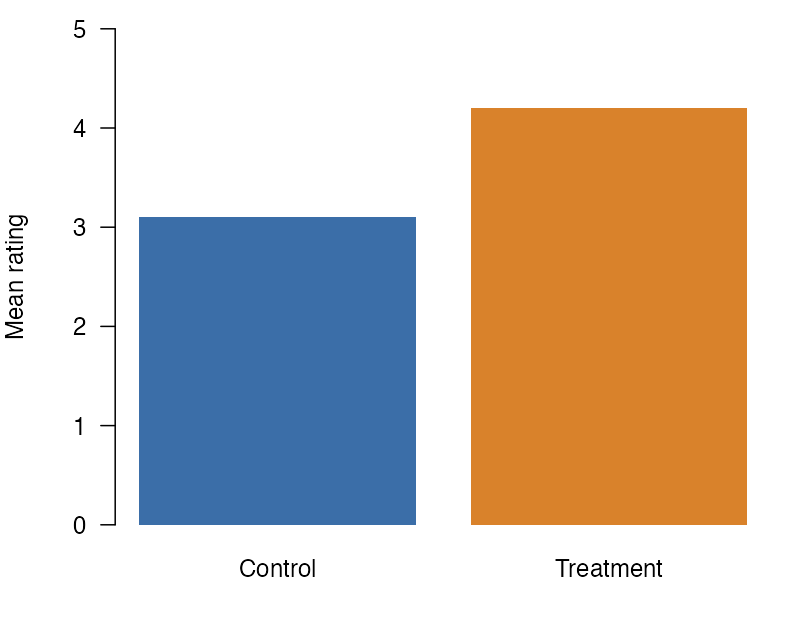

Where a figure keeps its normal layout
Some places cannot hold a wrapped figure. A wrapped figure there renders as a normal figure, and the render prints one warning for it.

Figure 1 has the class .wrap-right, but it is in a callout, so it keeps its normal layout.
The render of this page prints this warning for Figure 1:
(W) wrapped: the figure #fig-callout is in a callout, so it does not wrap.Places that keep the normal layout in all four formats
In HTML, PDF through LaTeX, PDF through Typst, and Word, a wrapped figure in one of the places in this first list does not wrap. It keeps its normal layout, and the render prints one warning for it. The warning names the figure’s id. If the figure has no id, the warning names its image file or says that the figure has no id. A code cell that makes more than one figure gets one warning for the cell instead, as stated below.
- The margin: a figure with the
.column-marginclass, a figure in a.column-marginor.asidediv, or a code cell with#| column: marginor#| fig-column: margin. The figure stays in the margin, unless a document key comes first in PDF (see the order after this list). In PDF through LaTeX, Quarto puts a captioned image that has the.column-marginclass and no#fig-id in the body instead. Word has no margin column, so there the figure is in the body. This item also coversfig-column: marginandcolumn: marginin the document metadata. In HTML and Word, that value applies to every figure with a#fig-id and every code cell figure, even a cell with#| fig-column: body. In PDF, the order after this list decides. It does not apply to a captioned image with no id, which stays in the body. Slides have no margin column, so on a slide only the aside div keeps the figure normal (see Slides). - A subfigure panel, such as a figure div with
layout-ncol, or a subfigure inside a panel. - A panel layout: a div or a code cell with
layout-ncol,layout-nrow, orlayout. - A list, a definition list included, a callout, a
.columnslayout, or a tabset. - In a dashboard, a code cell that is not inside a
.carddiv (see Dashboards).
When a figure and the document name different places
A figure’s own class and the document’s fig-column or column can name different places. In PDF through LaTeX and PDF through Typst, the extension reads them in the order of Quarto 1.10.19, and the first one set decides:
- the figure’s own
fig-column-*class, such as.fig-column-margin, - the document’s
fig-column, - the figure’s own
column-*or.asideclass, such as.column-margin, - the document’s
column.
For a code cell’s figure, the document’s fig-column, else its column, decides over the cell’s own column or fig-column option. If the document sets fig-column: body, a .column-margin figure with a #fig- id wraps in PDF, because Quarto puts it in the body there. In HTML, the extension reads a margin or page-wide class on the figure or its code cell before the document’s key. In Word, it reads a margin class there first. In HTML and in Word, a body class, such as .column-body, does not override the document’s key.
Code cells with more than one figure
A code cell that makes more than one figure without fig-subcap or a layout option does not wrap either. An example is a cell that draws two plots. Each of its figures keeps its normal layout, and the render prints one warning that names the cell’s label. The cell can be in a place on this page where its format keeps the normal layout, such as the margin or a callout. Then that one warning names the cell and the place, and no warning names a figure of the cell. If no paragraph follows a cell outside these places, its figures keep their normal layout with no warning, as any wrapped figure does there. To wrap a plot, give it its own cell with a paragraph after it. A cell with fig-subcap makes a subfigure panel, and a cell with layout-ncol, layout-nrow, or layout makes a panel layout. The list above covers both.
Tables
A table float wraps in HTML, in PDF through LaTeX, in PDF through Typst, and in Word. A #tbl- div, a pipe table with a #tbl- id, or a code cell with a tbl- label makes a table float. In PDF through LaTeX the extension sets the table as a tabular, which does not break across pages, in place of the longtable that Quarto writes.
The places on this page keep a table float’s normal layout as they keep a figure’s. For a table, tbl-cap-location takes the place of fig-cap-location, and tbl-column takes the place of fig-column, on a code cell and in the document metadata. In HTML and PDF through Typst, a tbl-column of margin or page puts the table in the margin or a page-wide column, where it keeps its normal layout. In PDF through LaTeX, Quarto leaves such a table in the text column, where it keeps its normal layout. In Word, a tbl-column of margin keeps the table’s normal layout, and one of page leaves it in the body, where it wraps. A document’s fig-column leaves tables in the body, where they wrap.
The wrap class can also go in the attribute block at the end of a table float’s caption, as in : A table {.wrap-left} in a #tbl- div or #| tbl-cap: "A table {.wrap-left}" in a knitr cell. The extension removes the wrap class from that block and places the table itself, and the block’s other classes, such as .striped, still apply.
Places that keep the normal layout in some formats
These places keep the normal layout only in the formats named. The render prints the same warning there, and the figure wraps in the other formats.
- A block quote: in PDF through LaTeX.
- A table float that holds raw LaTeX, as a table from gt, kableExtra, tinytable, or
knitr::kable(format = "latex")does: in PDF through LaTeX, where the warning names gt, kableExtra, and tinytable. - A table cell: in Word and in PDF through LaTeX. In PDF through LaTeX, a captioned figure in a table cell fails to render, with or without the extension, so only an image with no caption renders there.
- A caption in the margin: in HTML. The extension follows where Quarto puts the caption. When the figure or its code cell sets
cap-location, that value decides, and on a code cellfig-cap-locationacts ascap-location. Without acap-location, amarginvalue in any of three keys sends the caption to the margin: the figure’sfig-cap-location, the document’sfig-cap-location, and the document’scap-location. A value other thanmarginin one of these three does not overridemarginin another. For a captioned image with no id, Quarto reads only the document’sfig-cap-location, else itscap-location. The.margin-captionand.caption-marginclasses also send the caption to the margin. They work on the figure, on its image, and on its code cell, as in#| classes: wrap-right .caption-margin. For a captioned image with no id, only.margin-captiondoes this. - A page-wide column: a page-wide class on the figure or on a div around it, or a code cell with
#| column: pageor#| fig-column: page. The classes are.column-body-outset,.column-page-inset,.column-page,.column-screen-inset, and.column-screen, each alone or with-leftor-right, and.column-screen-inset-shaded. In HTML this covers all of them. In PDF through Typst it covers all of them on a div or a code cell. For a class on the figure itself, it covers only.column-pageand.column-screen, each alone or with-leftor-right. Quarto keeps the figure in the body for the others. In PDF through LaTeX it covers the classes that Quarto makes page-wide there: those that start with.column-pageor.column-screenand do not end in-left. Word keeps the figure in the body, where it wraps. This item also covers a page-wide value offig-columnorcolumnin the document metadata, such asfig-column: page. In HTML, that value applies to every figure with a#fig-id and every code cell figure, even a cell with#| fig-column: body. In PDF, the order after the first list decides. In PDF through Typst it applies as a class on the figure itself does, except on a code cell figure. It does not apply to a captioned image with no id, which stays in the body.
Other notes
- A captioned image with no
#fig-id wraps too, unless a place on this page applies to it, such as a caption in the margin. In HTML and Word it has no figure number. In PDF through LaTeX and Typst, Quarto numbers it. - An image beside other content in its paragraph, or beside other content in its link, does not wrap. In HTML, LaTeX, Typst, and Word the render prints a warning for it. An image that is the only content of a link, with the link alone in its paragraph, wraps.
- A wrap class on a link, as in
[](https://example.com){.wrap-right}, does not wrap. In HTML, LaTeX, Typst, and Word the render prints a warning for it. In Word with columns, or LaTeX withclassoption: twocolumn, it prints the one columns warning instead. Put the wrap class on the image inside the link, with the link alone in its paragraph. - A wrap class on a span, a heading, inline code, a code block, or a table with no
#tbl-id, as in[text]{.wrap-left}or: A table {.wrap-right}, does not wrap. In HTML, LaTeX, Typst, and Word the render prints a warning for it. In Word with columns, or LaTeX withclassoption: twocolumn, it prints the one columns warning instead. - In HTML, LaTeX, and Typst the sides are physical. In a right-to-left document,
.wrap-rightstill puts the figure on the right. Right-to-left Word documents are not tested. - A long caption wraps inside the figure box.
- If a page has margin content, such as a
.column-marginnote, a figure in the body of the page still wraps.